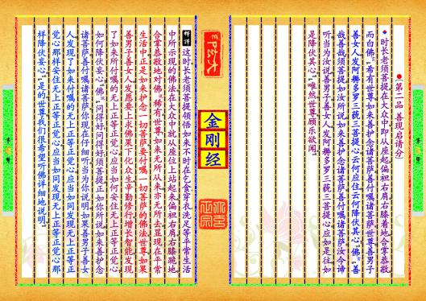
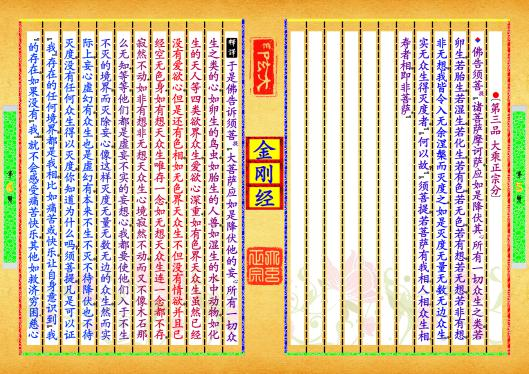
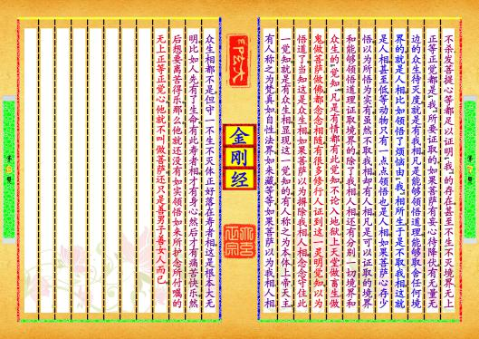
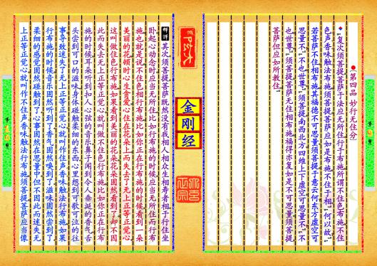
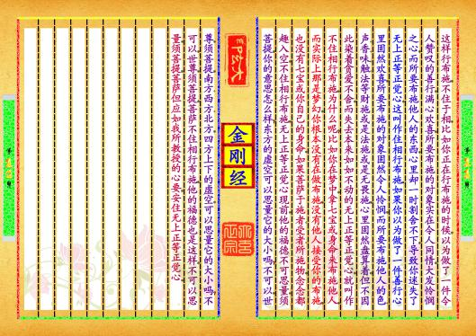
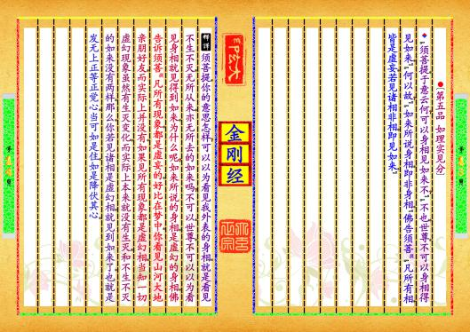
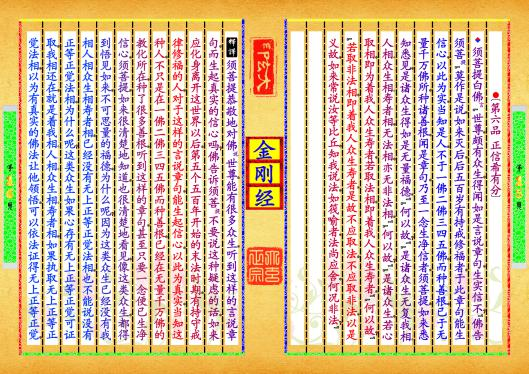

-
第【3-4】页 ▎⚫〔第二品▂善现启请分〕▼时长老须菩提，在大众中，即从座起，偏袒右肩，右膝着地，合掌恭敬，而白佛言，“希有世尊，如来善护念诸菩萨，善付嘱诸菩萨。世尊，善男子善女人，发阿耨多罗三藐三菩提心，云何应住，云何降伏其心？”佛言，“善哉善哉！须菩提，如汝所说，如来善护念诸菩萨，善付嘱诸菩萨，汝今谛听，当为汝说。善男子，善女人，发阿耨多罗三藐三菩提心，应如是往，如是降伏其心。”“唯然，世尊。顾乐欲闻。”Θ这时，长老须菩提领悟如来不时在乞食、穿衣、洗足等平常生活中所示现的佛法。在大众中就从座位上站起来，偏袒右肩，右膝跪地，合掌恭敬地对佛说，稀有，世尊！如来无所从来，亦无所去，显现在平常生活中，正是如来护念一切菩萨，要付嘱一切菩萨的佛法。世尊，如果善男子善女人，发愿要上求佛果下化众生，辛勤修行，增长智能，发现了如来所付嘱的无上正等正觉心，应当如何安住无上正等正觉心？如何降伏妄心？”佛说，“问得好！问得好！须菩提，正如你所说，如来善护念诸菩萨，善付嘱诸菩萨。你现在仔细听，当为你说明。如果善男子善女人，发现了如来付嘱的无上正等正觉心，应当如同发现无上正等正觉心那样安住无上正等正觉心，应当如同发现无上正等正觉心那样降伏妄心。”“是的，世尊，我们很希望听佛详细地说明。”预览书籍 全文配置
-
第【5-6】页 ▎⚫〔第三品▂大乘正宗分〕▼佛告须菩提，“诸菩萨摩诃萨，应如是降伏其心，所有一切众生之类，若卵生，若胎生，若湿生，若化生，若有色，若无色，若有想，若无想，若非有想，非无想，我皆令入无余涅槃而灭度之。如是灭度无量无数无边众生，实无众生得灭度者。”“何以故？”“须菩提，若菩萨有我相、人相、众生相、寿者相，即非菩萨。”Θ于是佛告诉须菩提，“大菩萨应如是降伏他的妄心，所有一切众生之类的心，如卵生的鸟虫，如胎生的人兽，如湿生的水中动物，如化生的天人等四类欲界众生，爱欲心深重；如有色界天众生虽然已经没有爱欲心，但是还有色相，如无色界天众生不但没有情欲，并且已经空无色身；如有想天众生唯存一念；如无想天众生连一念都不存，寂然不动；如非有想非无想天众生心境寂然不动，而又不像木石那么无知；等等。他们都是虚妄不实的妄想心，我都要使他们入于不生不灭的境界，而灭除妄心。像这样灭度无量无数无边的众生，然而实际上，妄心虚幻有，众生也是虚幻有，本来不生不灭，不待降伏，也不待灭度，没有任何众生得以灭度。你知道为什么吗？须菩提，凡是可以证“我”存在的任何境界，都是我相，比如痛苦或快乐，让自身意识到“我”的存在，如果没有“我”，就不会感受痛苦、快乐。其他如救济穷困、慈心预览书籍 全文配置
-
第【7-8】页 不杀、发菩提心等都足以证明“我”的存在，甚至不生不灭境界、无上正等正觉都是“我”所要证取的。如果菩萨有妄心待降伏，有无量无边的众生待灭度，就是有我相。凡是能够领悟道理，能够取舍任何境界的，就是人相，比如领悟了烦恼由“我”相所生，于是不取我相，这就是人相，甚至低等动物只有一点点领悟也是人相，如果菩萨心存少悟，以为所悟为实有，虽然不取我相，却有人相。凡是可以证取的境界和能够领悟道理证取境界的，除了我相、人相，还有分别一切境界和众生的“觉知”，凡是有情都有此觉知，不论入地狱、上天堂、做畜生、做鬼、做菩萨、做佛，都念念相随，有很多修行人证到这一灵明觉知，以为悟道了，当知这是众生相。如果菩萨以为摒除我相、人相，念念守住此一觉知，就是有众生相。显现这一觉知的，有人称之为本体、上帝、天主，有人称之为梵、真如、自性、法界，如来藏，等等，如果菩萨以为我相、人相、众生相都不是，但守一不生不灭体正好落在寿者相，这是根本大无明，比如人先有了生命，有此寿者相，才有身心，然后才有痛苦快乐，然后想要离苦得乐。那么，他就还没有如实领悟如来所护念所付嘱的无上正等正觉心，他就不叫做菩萨，还只是善男子善女人而已。预览书籍 全文配置
-
第【9-10】页 ▎⚫〔第四品▂妙行无住分〕▼“复次须菩提，菩萨于法应无所住，行于布施。所谓不住色布施，不住色、声、香、味、触、法布施，须菩提，菩萨应如是布施，不住于相。”“何以故？”“若菩萨不住，相布施，其福德不可思量。须菩提，于意云何？东方虚空可思量不？”“不也，世尊。”“须菩提，南西北方，四维上下虚空，可思量不？”“不也，世尊。”“须菩提，菩萨无住相布施，福得亦复如是不可思量。须菩提，菩萨但应如所教住。”Θ其次，须菩提，菩萨既然没有我相人相众生相寿者相，于行住坐卧，起心动念时，应当无所住。比如行布施的时候，应当无所住而行布施，也就是说，不住色相行布施，比如你正在行布施的时候，看到一朵美丽的花，顿时心生贪爱，心住在花朵上，而失去了无上正等正觉心，这叫做住色行布施；如果看到美丽的花朵，花朵固然看到了，却不因此而失去无上正等正觉心，就叫做不住色行布施。比如你正在行布施的时候，耳朵听到扣人心弦的音乐；鼻子闻到令人垂涎的香气；舌头尝到可口的滋味；身体碰触柔细的东西；心里想到可歌可泣的往事，导致迷失了无上正等正觉心，就叫作住声、香、味、触、法行布施。如果行布施的时候，音乐固然听到了；香气固然嗅到了；滋味固然尝到了；柔细的感觉固然碰触到了；心事固然在思量中，但不因此而迷失无上正等正觉心，就叫作不住声、香、味、触、法行布施。须菩提，菩萨应当像预览书籍 全文配置
-
第【11-12】页 这样行布施，不住于相，比如你正在行布施的时候，以为做了一件令人赞叹的善行，满心欢喜，所要布施的对象实在令人同情，大发怜悯之心，而所要布施他人的东西，心里却一时割舍不下，导致你迷失了无上正等正觉心，这叫作住相行布施；如果你以为做了一件善行心里固然欢喜，所要布施的对象固然令人怜悯，而所要布施他人的色、声、香、味、触、法等财施或是法施或是无畏施，心里固然盘算着，但不因此染着贪爱不舍，而失去本来如如不动的无上正等正觉心，就叫作不住相行布施。为什么呢？比如你在梦中，拿七宝或身命来布施他人，而实际上那是梦幻，你根本没有在做布施，没有他人接受你的布施，也没有七宝或你自己的身命。如果菩萨于施者、受者、所施物，念念都趣入空，不住相行布施，无上正等正觉心现前，他的福德不可思量。须菩提，你的意思怎么样？东方的虚空可以思量它的大小吗？不可以，世尊。须菩提，南方、西方、北方，四方上下的虚空，可以思量它的大小吗？不可以，世尊。须菩提，菩萨不住相行布施，他的福德也是这样，不可以思量。须菩提，菩萨但应如我所教授的心要，安住无上正等正觉心。预览书籍 全文配置
-
第【13-14】页 ▎⚫〔第五品▂如理实见分〕▼“须菩提，于意云何？可以身相见如来不？”“不也，世尊。不可以身相得见如来。”“何以故？”“如来所说身相，即非身相。”佛告须菩提，“凡所有相，皆是虚妄。若见诸相非相，即见如来。”Θ须菩提，你的意思怎样？可以以为看见我外表的身相，就是看见不生不灭，无所从来，亦无所去的如来吗？不可以，世尊，不可以以为看见身相就见得到如来，为什么呢？如来所说的身相，是虚幻的身相。佛告诉须菩提，凡所有现象，都是虚妄的，好比在梦中，你看见山河大地亲朋好友，而实际上并没有。如果见所有现象都是虚幻相，当知一切虚幻现象虽然有生灭变化，而实际上本来就没有生灭，和不生不灭的如来没有两样，那么，你若见诸相是虚幻相，就见到如来了。也就是发无上正等正觉心，当可如是住，如是降伏其心。预览书籍 全文配置
-
第【15-16】页 ▎⚫〔第六品▂正信希有分〕▼须菩提白佛言，“世尊，颇有众生，得闻如是言说章句，生实信不？”佛告须菩提，“莫作是说。如来灭后，后五百岁有持戒修福者，于此章句能生信心，以此为实。当知是人，不于一佛二佛三四五佛，而种善根，已于无量千万佛所，种诸善根。闻是章句，乃至一念生净信者。须菩提，如来悉知悉见，是诸众生得如是无量福德。”“何以故？”“是诸众生无复我相、人相、众生相、寿者相，无法相，亦无非法相。”“何以故？”“是诸众生，若心取相，即为着我人众生寿者，若取法相，即着我人众生寿者。”“何以故？”“若取非法相，即着我人众生寿者。是故不应取法，不应取非法。以是义故，如来常说汝等比丘，知我说法，如筏喻者。法尚应舍，何况非法？”Θ须菩提恭敬地对佛说，世尊，能有很多众生，听到这样的言说章句，而生起真实的信心吗？佛告诉须菩提，不要说这种疑虑的话。如来应化身离开这世界以后，第五个五百年开始的末法时期，有持守戒律修福的人，对于这样的言说章句，能生起信心，以此为真实。当知这种人，不只是在一佛二佛三四五佛而种善根，已经在无量千万佛的教化所在，种了很多善根。听到这样的章句，甚至只要一念便已生净信心。须菩提，如来很清楚地知道，也很清楚地看见，像这类众生，都得到悟见如来，不可思量的福德。为什么呢？因为这类众生已经没有我相人相众生相寿者相，已经没有无上正等正觉法相，也不能说没有正等正觉法相。为什么呢？这类众生如果心存有无上正等正觉可证取，我相还在，就是着我相、人相、众生相、寿者相，如果执取无上正等正觉法相，以为有真实的佛法让他领悟，可以依法证得无上正等正觉，预览书籍 全文配置